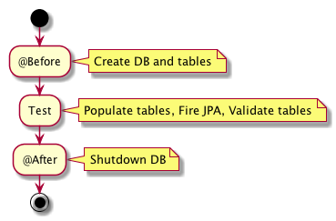
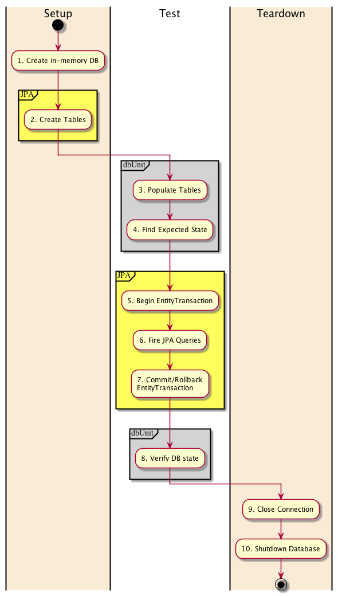
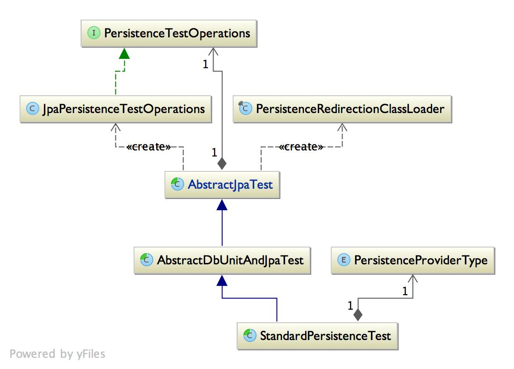

Nazgul Core: Persistence Test
The Java persistence API (JPA) is a great asset for creating entities that communicate with a (relational) database to read and write their state to persistent storage. The Nazgul Core: Persistence test project provides a suite of classes which simplifies creating automated tests for JPA-annotated entities.
JPA-annotated entity classes typically need some extra scaffolding to meaningfully participate in an automated test. We all want to validate that our entities work correctly - and connecting the JPA provider to a real (but small) database it is frequently really helpful to discover the specifics of how your JPA annotations affect the physical model. It would also be really good to validate the behaviour in a standard unit test setting.
Unit tests or integration tests?
In a textbook sense, the Nazgul Core: Persistence test project provides scaffolding to simplify running automated integration tests, as the database is not mocked (which is the traditional approach by unit tests) but instead an in-memory database created and populated before the tests are started. At the same time, it is difficult to run meaningful tests on Model entities when mocking the entire JPA framework since the (JPA) provider certainly plays an important role in any system where it is used.
StandardPersistenceTest lifecycle
The StandardPersistenceTest, from which you should normally derive/extend your automated test classes, achieves the persistence test structure using a standard setup/test/teardown lifecycle as shown in the image below.

StandardPeristenceTest lifecycle tasks
In somewhat more detail, the StandardPersistenceTest lifecycle consists of 10 steps. These steps are illustrated in the image below and described in the list following it.

- An in-memory database (typically hsqldb) is created.
- The JPA EntityManager loads definitions and class information from a test-class-specific persistence.xml and creates the database tables from the annotated JPA classes defined within it.
- The actual test starts; dbUnit reads a setup_[testMethodName].xml file to populate the tables within the in-memory database with a well-known state.
- dbUnit reads an expected_[testMethodName].xml file to find an expected database state, typically what should be expected after the test completes.
- The test normally begin()s an EntityTransaction, since JPA operations frequently needs to execute within a transaction.
- The actual JPA test methods can be fired at will against the database. At this stage in the test, both or either of JPA and dbUnit connections can be used to access the database. However, it is recommended that only JPA be used to manipulate (table) row data.
- Since JPA providers normally do not write data to the database before the active EntityTransaction is commit()ted, we should now perform a commit (or rollback, depending on the needs of the test). This flushes the JPA provider’s cache and writes any data to the database tables.
- Following committing the active transaction, we should now validate the database state. The recommended approach is to use dbUnit to “see” directly into the actual database state (implying that any JPA provider cache state will not hide real database table data).
- The Connections to the in-memory database (both JPA/EntityManager and dbUnit/iConnection) are closed.
- The in-memory database is shut down.
Enough overviews.
An example could be the best way to illustrate the use of the Nazgul persistence test framework.
Persistence test structure
While the classes of the Nazgul Core: Persistence Test component hides some fairly complex underpinnings, there are relatively few classes involved. The image below illustrates the static aspects of the component:

- The AbstractJpaTest class holds mechanics for automating JPA tests. As such, it creates a simplified view to the EntityManager, called JpaPersistenceTestOperations and exposes it as a variable called jpa. Moreover, the AbstractJpaTest class also creates a custom ClassLoader which simply means that you can use a persistence.xml file located in a location other than the standard META-INF/persistence.xml.
- The AbstractDbUnitAndJpaTest class extends the AbstractJpaTest class by adding mechanics for populating and validating database content using the dbUnit framework.
- Finally, the StandardPersistenceTest implements a set of standards regarding structure, placement, naming and so on. This is also the class your automated tests should extend, as illustrated in the standard example.